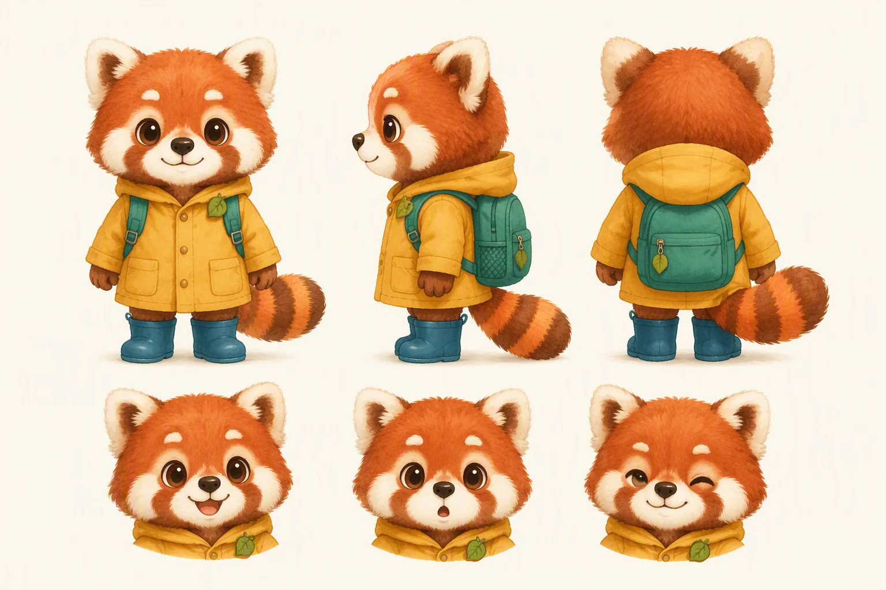
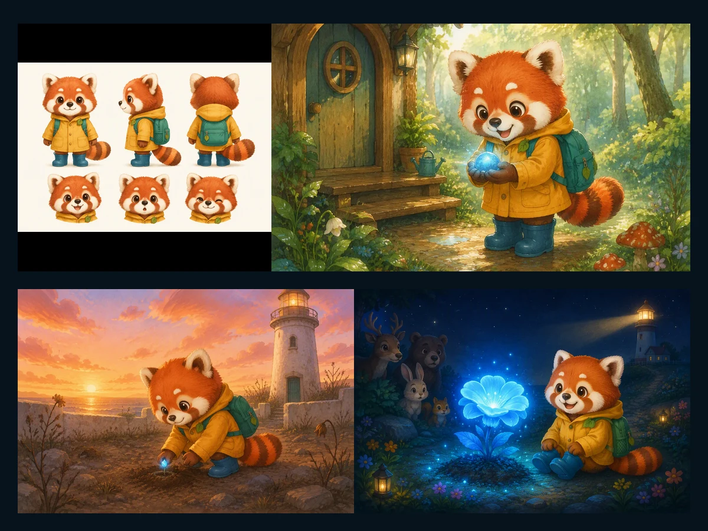
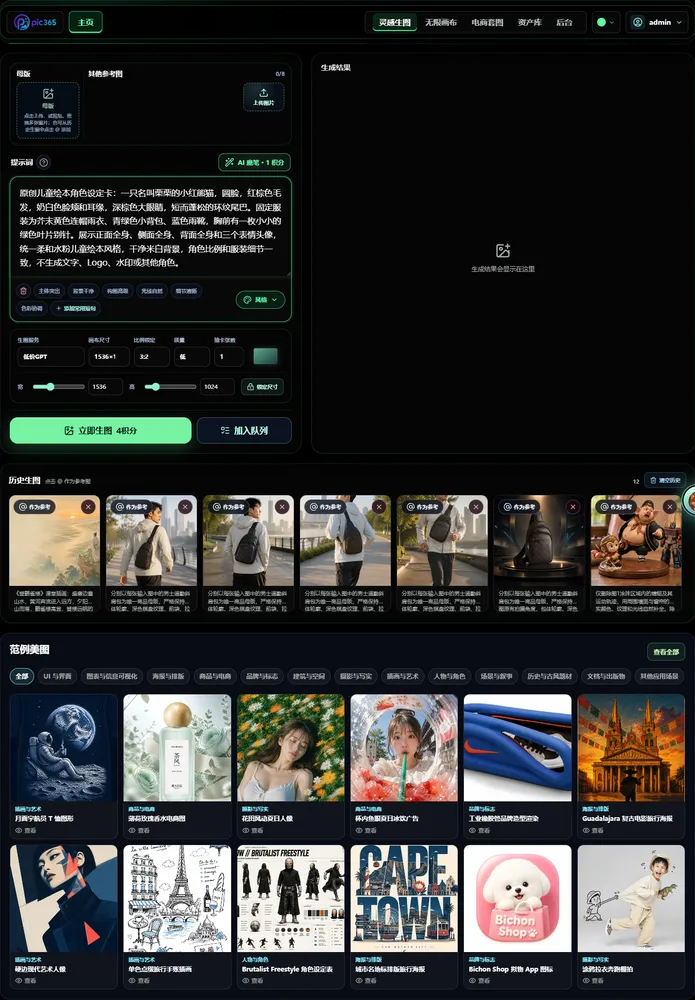
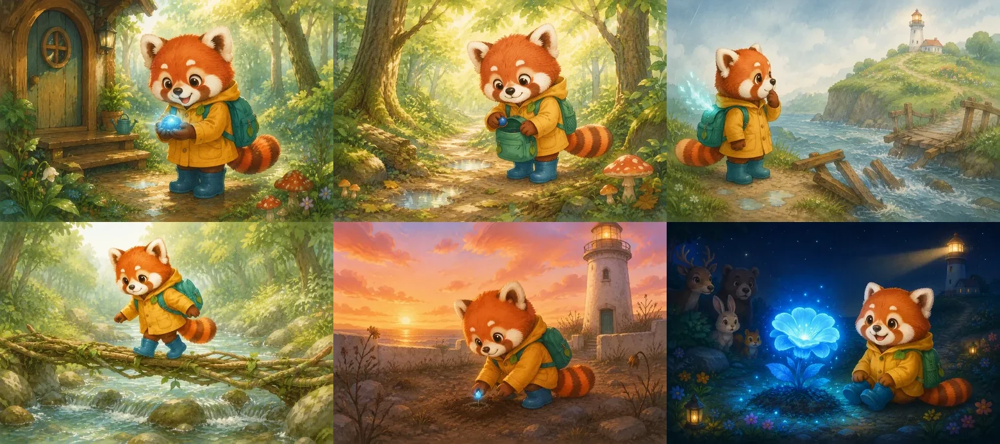

02 · 角色母版
先把不允许变化的特征画清楚
红棕色毛发、奶白脸颊、黄色雨衣、青绿背包、蓝色雨靴、环纹尾巴和叶片别针，都是后续镜头需要识别的锚点。
先固定原创角色“栗栗”的外貌和服装，再把寻找发光种子的故事拆成六个镜头。失败镜头可以单独重做，不必整套重来。

适合绘本作者、儿童内容团队和需要批量制作连续故事画面的运营人员。先建立原创角色母版，再逐镜头生成，才能让服装、道具和身份稳定延续。

红棕色毛发、奶白脸颊、黄色雨衣、青绿背包、蓝色雨靴、环纹尾巴和叶片别针，都是后续镜头需要识别的锚点。
截图来自本次真实执行。首次批量任务取消后，仅重新提交对应镜头，并最终得到六张成功结果。

以图1中的原创小红熊猫“栗栗”为唯一角色母版，严格保持红棕色毛发、奶白脸颊、环纹尾巴、芥末黄色连帽雨衣、青绿色小背包、蓝色雨靴和绿色叶片别针一致。 绘本第 N 幕：[只描述当前镜头的地点、动作和故事信息]。 柔和水粉儿童绘本，横版 3:2，无文字、Logo、水印。
画面从清晨走到夜晚，种子、断桥和灯塔构成连续线索。

先建立角色卡，再把故事拆成每行一个镜头。